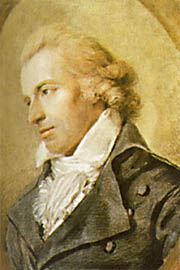

Örömóda (részlet) Lángolj fel a lelkünkben szép Égi szikra szent öröm, Térj be hozzánk drága vendég, Tündökölj ránk fényözön. Egyesítsed szellemeddel, Mit zord erkölcs szétszakít, Testvér lészen minden ember, Merre lengnek szárnyaid.